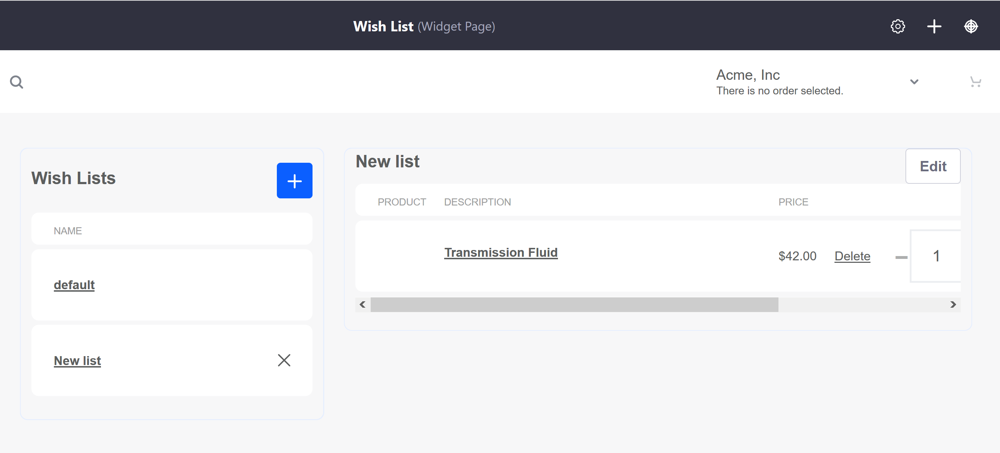

List¶
The List Page is the page where buyers can create and view wish lists using the Wish Lists and Wish List Contents widgets.
The Wish Lists widget shows a list of all created wish lists created by an authenticated user. The Wish List Contents widget shows all products that have been added to a particular list.
Note that wish lists are scoped to be site specific; if a Liferay Commerce instance has more than one store site, wish lists are not transferred or saved across sites.
